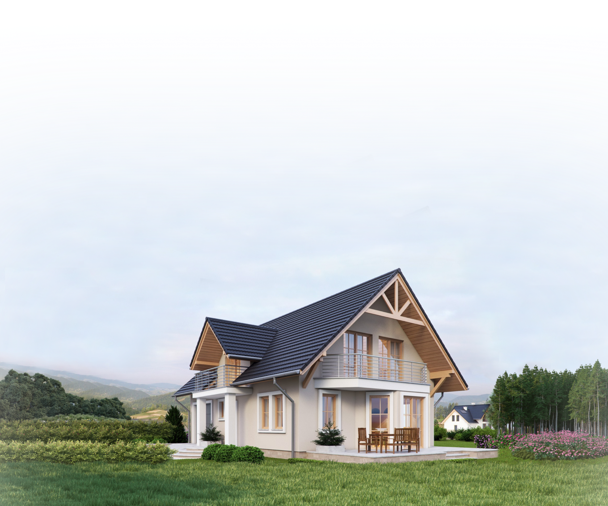
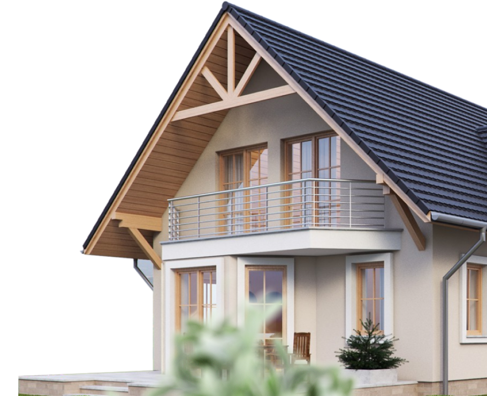

ПРО ДОМ · Казань
Кирпичные дома в Казани
Проектируем и строим кирпичные дома. Посмотрите варианты архитектуры и обсудите состав работ и планировку.
Посмотреть домаПРИМЕРЫ РЕШЕНИЙ
Начните с проекта дома
Подберите подходящую площадь и этажность. Обсудим планировку, участок и материалы, которые нужно заложить в расчёт.

Проект дома с террасой
ПРО ДОМ · Казань
Проект дома с террасой
Подберите подходящую площадь и этажность. Обсудим планировку, участок и материалы, которые нужно заложить в расчёт.
Обсудить строительство